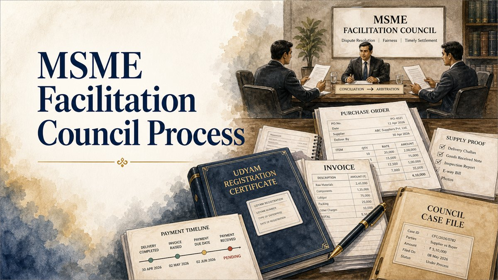

For a Section 18 reference, the starting rule is supplier-side jurisdiction. Under the presently operative Section 18(4) of the MSMED Act, the MSEFC or ADR centre has jurisdiction where the supplier is located even if the buyer is located anywhere in India. That does not automatically answer a later Section 34 court-jurisdiction question, which can turn on the juridical seat and a valid exclusive-jurisdiction clause.

MSEFC jurisdiction in one minute
- For the Section 18 MSEFC reference, the statutory focus is the location of the supplier, not the buyer.
- The buyer may be located anywhere in India.
- The buyer's registered office, project site, payment office or place where the purchase order was issued does not by itself transfer the Section 18 reference to that State's Council.
- A private arbitration agreement does not ordinarily displace the statutory Section 18 mechanism once that mechanism is validly invoked.
- The question "Which MSEFC can receive the reference?" is different from "Which court can hear a Section 34 challenge to the award?".
- Supplier eligibility, registration timing, the actual supplier entity and the location shown by the record must be checked separately.
What does Section 18(4) say about territorial jurisdiction?
The presently operative Section 18(4) of the Micro, Small and Medium Enterprises Development Act, 2006 uses a specific territorial rule. The MSEFC or the centre providing alternative dispute resolution services may act as arbitrator or conciliator in a dispute between a supplier located within its jurisdiction and a buyer located anywhere in India.
This is deliberately different from an ordinary civil-suit jurisdiction analysis. The provision gives the micro or small supplier access to the Facilitation Council connected with the supplier's location, even where the buyer, project, head office or payment office is in another State.
The Ministry of MSME has also publicly explained Section 18(4) in these terms: the Council or ADR centre has jurisdiction where the supplier is located, while the buyer can be anywhere in India.
Simple inter-State examples
| Supplier | Buyer | Starting forum analysis |
|---|---|---|
| Micro/small supplier located in Bihar | Buyer in Delhi | Start by identifying the competent Bihar MSEFC for the supplier's location. |
| Micro/small supplier located in Delhi | Buyer in Uttar Pradesh | Start with the Delhi MSEFC connected with the supplier, not merely the buyer's Uttar Pradesh address. |
| Micro/small supplier located in Rajasthan | Buyer in Maharashtra | The buyer's Maharashtra location does not by itself move the Section 18 reference to Maharashtra. |
| Supplier has offices or registrations in more than one State | Buyer elsewhere | Do not choose a Council only for convenience. Match the actual supplier entity, relevant unit/location and registration/transaction record. |
These are starting illustrations, not automatic filing conclusions. Eligibility as a statutory "supplier", the registration record, transaction dates, actual supplying unit and current procedural rules can affect the result.
Does the buyer's location or cause of action decide the MSEFC?
For the Section 18 reference itself, the statutory formula is not the ordinary Code of Civil Procedure test of where the defendant resides or where the cause of action arose. Section 18(4) expressly contemplates a buyer located anywhere in India.
That means a buyer cannot ordinarily say that only the Council in the buyer's State has jurisdiction merely because the purchase order was issued there, goods were delivered there, payment was to be made there or the project was executed there.
The 2024 Delhi High Court decision in Delhi Tourism and Transportation Development Corporation Ltd. v. Satinder Mahajan dealt with a supplier based in Pathankot and a Delhi buyer. The Court recognised the Section 18(4) objective of permitting the enterprise to approach the Facilitation Council where it is located.
What should be checked to establish the supplier's location?
The statute uses the expression "supplier located within its jurisdiction". In a straightforward case, the location may be clear from the enterprise and transaction records. In a multi-unit or multi-State business, more care is required.
Review the Udyam or other applicable registration record, constitution of the supplier, address of the supplying unit, invoices, purchase orders, GST records where relevant, delivery/service records and the identity of the entity that actually contracted and supplied the goods or services.
A recent Delhi High Court decision, Shri Krishan Grit Co. v. Continental Engineering Corporation (8 September 2026), emphasised the connection between the supplier's location/registration and the competent MSEFC. The case also involved a separate and important registration-timing dispute, so it should not be reduced to a one-line forum rule.
Can a supplier choose between different State MSEFCs?
Not merely because the supplier has some commercial connection with more than one State. The statutory mechanism does not create a free forum-shopping option.
If the business has multiple establishments, registrations or units, the file should identify which legal entity supplied the goods or services, which unit was involved, what the registration records show, and whether the claimed Council is actually connected to that supplier. A branch office, later registration or unrelated unit should not be used as a shortcut to a preferred forum.
The territorial issue should therefore be resolved before filing, not after the buyer raises a jurisdiction objection.
Does a private arbitration clause override the MSEFC forum?
Once the statutory Section 18 mechanism is validly invoked, the Supreme Court's decision in Gujarat State Civil Supplies Corporation Ltd. v. Mahakali Foods Pvt. Ltd. confirms the overriding character of the MSMED mechanism over an independent arbitration agreement for disputes to which Chapter V applies.
The Council may conduct the statutory process itself or refer the matter as Section 18 permits. The existence of a contractual arbitration clause does not, by itself, require the supplier to abandon a valid Section 18 reference and use only the private mechanism.
This does not mean every MSME-related contract dispute must automatically go through MSEFC. The distinction becomes important where the Section 18 mechanism has never been invoked.
Does every MSME dispute have to go before MSEFC?
No blanket rule should be stated. In M/s Total Application Software Co. Pvt. Ltd. v. M/s Ashoka Distillers and Chemicals Pvt. Ltd. (Delhi High Court, 27 May 2025), the Court held that Section 18 does not create an absolute bar against a contractual arbitration route where the Council has not been invoked.
The same decision recognised the opposite side of the rule: once a party invokes Section 18 and the statutory mechanism is triggered, that process cannot simply be abandoned in favour of a parallel Section 11 appointment route.
Accordingly, the first procedural question is whether a Section 18 reference has actually been made and what stage it has reached.
Can the buyer challenge the Council's territorial jurisdiction?
Yes. A buyer can raise an objection that the supplier is not located within the territorial jurisdiction of the Council invoked, that the entity before the Council is not the relevant statutory supplier, or that the registration/location record relied on does not match the underlying transaction.
Such objections should be raised promptly and supported by documents. Once the matter reaches arbitration, the arbitral tribunal has power under Section 16 of the Arbitration and Conciliation Act to rule on its own jurisdiction. Mahakali Foods expressly recognised that principle in the MSMED context.
A jurisdiction objection should therefore identify the precise defect. Merely saying "the buyer is in another State" is not enough where Section 18(4) expressly permits an inter-State buyer.
MSEFC jurisdiction is not the same as Section 34 court jurisdiction
This is the point most likely to be confused. Section 18(4) answers which Council or ADR centre can act under the MSMED reference. After an arbitral award is made, a challenge under Section 34 of the Arbitration and Conciliation Act raises a separate court-jurisdiction question.
In Satinder Mahajan, the MSEFC proceedings and award were in Pathankot. There was no operative exclusive-jurisdiction clause fixing another seat. The Delhi High Court held that Pathankot was the juridical seat and that Delhi did not have jurisdiction to hear the Section 34 petition.
However, the same judgment discussed binding Delhi High Court Division Bench authorities such as Indian Oil Corporation Ltd. v. FEPL Engineering (P) Ltd. and IRCON International Ltd. v. Pioneer Fabricators Pvt. Ltd., where a contractual exclusive-jurisdiction/seat clause supported Section 34 jurisdiction in Delhi even though the MSEFC proceedings took place outside Delhi.
Therefore: do not assume that the court for challenging an MSEFC award is always the court where the buyer is located, and do not assume it is always the court where the Council sits. Read the arbitration clause, seat/venue language, exclusive-jurisdiction clause and the actual conduct of the arbitral proceedings.
What if the contract says "courts at Delhi only"?
That clause does not automatically transfer the Section 18 reference from a supplier-side MSEFC to Delhi. The statutory forum question and the court-supervision question must be kept separate.
If the supplier validly invokes the MSEFC having statutory territorial jurisdiction, the Council can still proceed under Section 18. But an effective contractual clause fixing the arbitral seat or exclusive supervisory court may become significant if an award is later challenged under Section 34.
The clause must actually cover the relevant dispute and arbitration. A general jurisdiction sentence in an unrelated tender document or integrity pact may not be enough; Satinder Mahajan itself turned on that contractual interpretation.
Supplier-side jurisdiction checklist
- Identify the exact legal entity that supplied the goods or services.
- Collect the Udyam/applicable registration record and historical registration details.
- Identify the unit or establishment connected with the transaction.
- Match invoices, purchase orders, GST details, delivery records and bank/payment correspondence.
- Identify the State MSEFC that covers the supplier's location.
- Check whether a Section 18 reference has already been filed elsewhere.
- Review the arbitration clause, seat/venue clause and exclusive-jurisdiction language separately.
- Check limitation before assuming that a procedurally valid forum also makes every invoice enforceable.
Buyer-side jurisdiction checklist
- Confirm the claimant's legal identity and statutory supplier status.
- Check the supplier's location and registration record for the transaction period.
- Do not object only because the buyer is outside the supplier's State.
- Check whether the claimant is relying on a later or different-State registration.
- Raise a specific territorial or supplier-status objection at the earliest appropriate stage.
- Review whether Section 18 was validly invoked and whether a private arbitration was already pending or completed.
- Keep the later Section 34 court-jurisdiction analysis separate from the Council-jurisdiction objection.
- Preserve the contract, jurisdiction clause, arbitration clause and records showing the actual place of arbitral proceedings.
Current 2026 amendment position
Current-status caution as of 5 October 2026: the Mediation Act, 2023 contains a future substitution of Section 18 of the MSMED Act. Section 62 and the Seventh Schedule would replace conciliation terminology with mediation and move the jurisdiction clause to substituted Section 18(5). The 9 October 2023 commencement notification reviewed for this article did not bring Section 62 into force.
The MSMED (Amendment) Act, 2026 received Presidential assent on 13 August 2026. Its future Section 18 amendment would tie jurisdiction expressly to the supplier's official address as per registration under Section 8. The Amendment Act itself provides for commencement on a date or dates appointed by Central Government notification.
The official materials reviewed for this publication did not establish commencement of the relevant substituted Section 18 changes. Until the transition is legally brought into force, the presently operative pre-Mediation-Act Section 18(4) supplier-location rule should not be silently replaced with the future wording. The commencement position should be checked again for every live matter.
Bihar, Delhi and NCR examples
A Bihar supplier claiming against a Delhi buyer does not ordinarily have to shift the Section 18 reference to Delhi merely because the buyer is there. The first forum inquiry is the competent MSEFC connected with the Bihar supplier.
Likewise, a Delhi supplier claiming against a buyer in Noida or Ghaziabad does not ordinarily move the Section 18 reference to Uttar Pradesh merely because the buyer or project is in NCR. The Delhi supplier-location rule remains the starting point.
However, if the dispute later reaches a Section 34 challenge, the contractual seat/exclusive-jurisdiction terms and the actual arbitral proceedings should be reviewed afresh rather than carrying the MSEFC territorial conclusion forward automatically.
Frequently asked questions
Which MSEFC has jurisdiction if the supplier is in Bihar and buyer is in Delhi?
Under the presently operative Section 18(4), start with the competent MSEFC covering the supplier in Bihar. The Delhi location of the buyer does not by itself transfer the reference to Delhi.
Can a buyer insist that the claim be filed where the goods were delivered?
Not merely on that basis. Delivery location can be relevant to facts and other proceedings, but Section 18(4) uses the supplier-location rule for the MSEFC mechanism.
Can two State MSEFCs have jurisdiction over the same supplier?
Do not assume overlapping jurisdiction. Where multiple units or registrations exist, the supplier entity, relevant unit, registration and transaction record must be matched to the Council invoked.
Does an arbitration clause naming Delhi defeat an MSEFC reference elsewhere?
Not automatically. Once Section 18 is validly invoked, the statutory mechanism has overriding effect over an independent arbitration agreement. The Delhi clause may still be relevant to the later supervisory-court/Section 34 analysis depending on its wording and the juridical seat.
Where should an MSEFC award be challenged?
That is a separate Arbitration Act jurisdiction question. Review the seat, venue, exclusive-jurisdiction clause, place where the arbitral proceedings were anchored, and applicable High Court/Supreme Court authority.
Has the 2026 amendment already made the Udyam official address conclusive?
The Amendment Act contains that future formulation, but the relevant commencement must be verified. This article does not treat the future wording as operative merely because the Act received assent.
Conclusion
For an inter-State delayed-payment dispute, the MSEFC forum question should begin with the supplier, not the buyer. The presently operative Section 18(4) permits the competent Council or ADR centre to act where the supplier is located even though the buyer is anywhere else in India.
The analysis should then split into separate questions: Is the claimant a qualifying statutory supplier? Which Council is connected with that supplier? Has Section 18 been invoked? Does any registration or unit-location issue arise? And, if an award is later challenged, which court has supervisory jurisdiction under the Arbitration Act? Keeping those questions separate avoids the common mistake of treating buyer location, MSEFC location and Section 34 court jurisdiction as the same issue.
Last updated on: 05/10/2026 at 17:32
Useful Internal Pages
References / Sources
- Micro, Small and Medium Enterprises Development Act, 2006 - India Code.
- Ministry of MSME / PIB, "Arbitration under MSME Act", 2 August 2021 - explanation of Section 18(4).
- Gujarat State Civil Supplies Corporation Ltd. v. Mahakali Foods Pvt. Ltd. (Unit 2), Supreme Court, 31 October 2022.
- Delhi Tourism and Transportation Development Corporation Ltd. v. Satinder Mahajan, Delhi High Court, 1 May 2024.
- M/s Total Application Software Co. Pvt. Ltd. v. M/s Ashoka Distillers and Chemicals Pvt. Ltd., Delhi High Court, 27 May 2025.
- Shri Krishan Grit Co. v. Continental Engineering Corporation, Delhi High Court, 8 September 2026.
- S.O. 4384(E), 9 October 2023 - commencement notification under the Mediation Act, 2023.
- Ministry of MSME - Orders and Notices, including the MSMED (Amendment) Act, 2026.